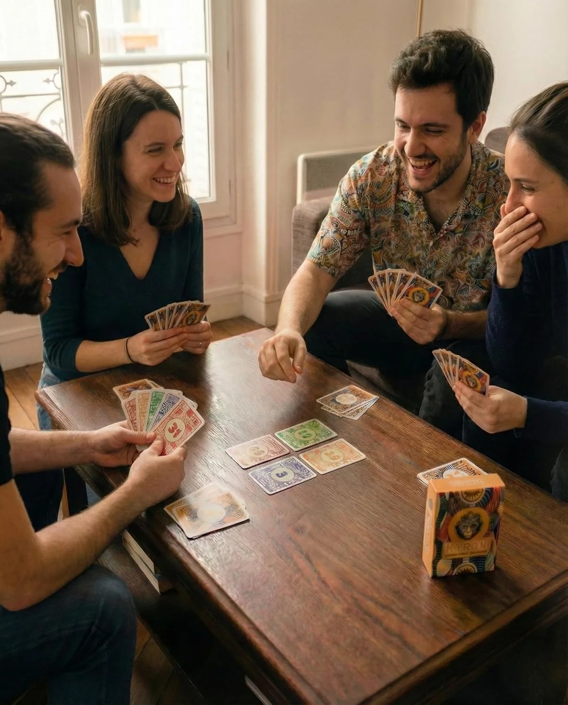

Idée cadeau · Noël 2026
Un jeu de cartes à offrir, à jouer tous ensemble
KYRAN se joue de 3 à 6, dès 8 ans, en 30 minutes environ. Chacun parie sur ses plis, bluffe un peu, et la partie tient dans une boîte de poche.
- 3 à 6joueurs
- 8 anset plus
- 30 minenviron
- 175 gla boîte
9,99 €+ 2,99 € de port en France, un seul port par commande


En bref
Pourquoi c'est un bon cadeau
-
Toute la table joue
De 3 à 6 joueurs, dès 8 ans. Enfants et adultes jouent à la même table, avec les mêmes règles.
-
Pas de gros livret
Les règles tiennent sur 7 cartes. Une vidéo de 5 minutes les explique aussi sur le site.
-
Une boîte de poche
Boîte rigide de 11,5 × 8,5 × 2,8 cm pour 175 g. Elle se glisse dans un sac.
-
Un petit budget
9,99 € la boîte en direct du créateur. Un seul port de 2,99 € en France, même pour plusieurs cadeaux.

Pour qui ?
À qui l'offrir
- Une familleavec des enfants de 8 ans et plus, qui joue ensemble pendant les fêtes.
- Une bande d'amisqui se retrouve à 3, 4, 5 ou 6 pour une soirée.
- Un amateur de jeux de plisqui connaît le Tarot Africain : KYRAN en reprend le principe du pari exact.
À savoir : KYRAN ne se joue pas à deux. Pour un couple qui joue souvent en tête-à-tête, choisissez un autre jeu.

Le contenu
Ce que la personne va ouvrir
- 45cartes de jeu toilées : 36 Nombre, 8 Pouvoir et la carte Mystique
- 30cartes Vie, 5 pour chaque joueur
- 7cartes de règles, et un QR code sur la boîte vers les règles en ligne
- 1boîte rigide, illustrations de Crea by Floh
Livraison
Recevoir le jeu à temps
-
1
Vous commandez
Paiement sécurisé par Stripe. Vous choisissez le nombre de boîtes sur la page de paiement.
-
2
Le colis part
Sous 24 à 48 h ouvrées, avec un numéro de suivi La Poste envoyé par e-mail.
-
3
Il arrive
En 2 à 4 jours ouvrés en France. Comptez 3 à 6 jours ouvrés pour les autres pays livrés.
Pour Noël : en France, commandez au moins 6 jours ouvrés avant le jour où vous offrez le jeu. Ce sont les délais annoncés, pas une date garantie.
Retour possible sous 14 jours francs après réception, frais de retour à notre charge. Conditions dans les CGV.
Avant d'offrir
Essayez le jeu en ligne, gratuitement
Vous hésitez ? L'Initiation vous apprend le jeu en sept étapes guidées, puis vous fait jouer contre l'ordinateur, dans le navigateur, sans compte. Les règles complètes sont aussi en ligne, avec la vidéo.


Avis des joueurs
4,7/5 sur 33 évaluations Amazon.fr
« Super jeu à faire en famille ou entre amis. Nous aimons les jeux de société et le kyran est une belle découverte. Idéal pour un cadeau. »
Questions
Avant d'offrir KYRAN
Peut-on y jouer à deux ?
Non. Il faut être au moins 3, et 6 au plus. C'est un cadeau pour une famille ou une bande d'amis, pas pour un duo.
Quand commander pour que le jeu arrive à temps ?
Le colis part sous 24 à 48 h ouvrées, puis comptez 2 à 4 jours ouvrés en France et 3 à 6 jours ouvrés dans les autres pays livrés. En France, commandez donc au moins 6 jours ouvrés avant le jour où vous offrez le jeu. Ce sont des délais annoncés, pas une date garantie.
Et si le cadeau ne plaît pas ?
La personne qui a passé la commande a 14 jours francs après la réception du colis pour se rétracter, sans donner de motif. Le jeu doit revenir complet, dans son état d'origine. Les frais de retour sont à notre charge. Le délai part de la réception du colis, pas du jour où vous offrez le jeu. Tout est détaillé dans les CGV.
Faut-il connaître les jeux de cartes pour y jouer ?
Non. Les règles sont imprimées sur 7 cartes rangées dans la boîte. Pour une première partie, retirez les cartes Pouvoir et la Mystique. Vous pouvez aussi lire les règles en ligne ou essayer gratuitement l'Initiation avant d'offrir le jeu.
Combien coûte le port si j'offre plusieurs boîtes ?
En France métropolitaine, le port est de 2,99 € par commande, quel que soit le nombre de boîtes. La quantité se choisit sur la page de paiement Stripe. Pour les autres pays livrés, les frais dépendent de l'adresse et s'affichent avant le paiement.

Offrez KYRAN cette année
- Le jeu
- 9,99 €
- Port en France, par commande
- 2,99 €
- Total pour une boîte
- 12,98 €
Aussi sur Amazon.fr à 17,99 €.
Vous cherchez d'autres idées ? Voici notre sélection de jeux de cartes à offrir à Noël, classés selon la personne qui les reçoit.